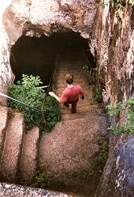

Mangapwani Coral Cavern
Useful Information
| Location: | On Zanzibar Island. 20km north of Zanzibar Town. From Zanzibar Town take main road through Bububu to Chuini, then turn left to Bumbwini. After 7km, in Mangapwani village, turn left towards the coast. After 1km turn left into a narrow dirt road. |
| Open: |
All year daily. [2011] |
| Fee: |
Adults TZS 1000. [2011] |
| Classification: | |
| Light: | bring torch |
| Dimension: | L=300m. |
| Guided tours: | excursions to the nearby beach which include a visit to the cave can be booked at the hotels |
| Photography: | |
| Accessibility: | |
| Bibliography: |
Michael Laumanns (2001):
Tanzania 1994 - 2000, Berliner Höhlenkundliche Berichte, Volume 1, 67 pp, many b&w-photos and surveys, 4 annexes, Speläoclub Berlin, Berlin 2001, ISSN 1617-8572 Pete Rose (2005): Caving in Zanzibar, a Pathetic attempt, Belfry Bulletin (521) 15-16. |
| Address: | |
| As far as we know this information was accurate when it was published (see years in brackets), but may have changed since then. Please check rates and details directly with the companies in question if you need more recent info. |
|
| Last update: | $Date: 2015/11/20 13:20:41 $ |
|  |
| Image: Michael Laumanns walking down the stairs into Mangapwani Coral Cavern. © Daniel Gebauer |
History
| 1873 | official closure of the Slave Market, cave used as a secret hideout from which the slaves were illegaly led out to the sea through a secret passage. | |
| 1995 | surveyed by Daniel Gebauer, Kaufmann, and Michael Laumanns. |
Description
Mangapwani Coral Cavern is a large natural cave in a coral reef. Mangapwani means Arab shore, this area was called so because it was the property of a wealthy Arab landowner named Hamed Salim El Hathy who had many slaves working on his plantations.
The entrance to the cave is a collapsed part of the roof. A flight of stone steps leads through the entrance down into the cavern itself. To the left a huge passage starts. It has a pool of fresh water at its lowest point. This passage also contains a bat colony. The staircase at the entrance are the only improvement made to the cave, there are no paths and no electric light.
The early inhabitants of this part of the island knew this cave and used the pool to collect drinking water. They left archaeologic evidence for this. But eventually the knowledge got lost and the vegetation grew across the entrance.
The cavern was rediscovered in the early 19th century by a young boy searching for a lost goat. Local people were able to use the water again, and even Hamed Salim sent his slaves regularly to collect the water for his own use. The water is used by the locals until present.
There are legends that the cavern may have been used for illegal slave trade, after it was officially abolished in 1873. This seems to be a mixup with nearby Mangapwani Slave Cave, which is an artificial shelter built for this use in 1880. Probably the cave was used in the years between, but as this was illeag there are no documents or other evidence, and cave guides are lengendary for telling true facts about caves.
There are also stories that this caves were once more than five kilometers long, but the rest of the tunnels collapsed. Actually this is the most common cave legend, and as a matter of fact we do not know a single case where it ever had some truth.
 Search Google for "Mangapwani Coral Cavern"
Search Google for "Mangapwani Coral Cavern" Google Earth Placemark
Google Earth Placemark Mangapwani - Zanzibar Travel Guide
(visited: 29-JUN-2012)
Mangapwani - Zanzibar Travel Guide
(visited: 29-JUN-2012)